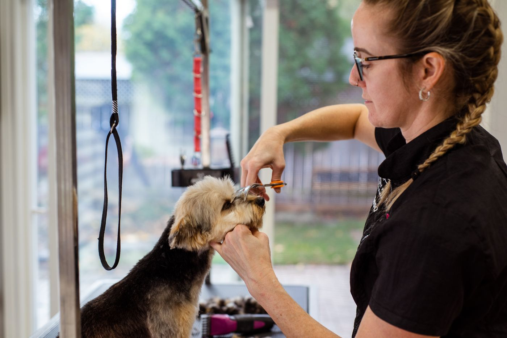

Комплекс
Стрижка и купание, подстригание когтей, чистка ушей. Стрижку хозяин выбирает вместе с мастером.
уточняетсязависит от породы и размера
Выберите салон, расскажите о питомце и выберите время — заявка придёт мастеру в Telegram, он подтвердит запись звонком или в WhatsApp.

Это концепт. С вашими фото и правками будет ещё лучше
Описание услуг — с текущего сайта салона.
Стрижка и купание, подстригание когтей, чистка ушей. Стрижку хозяин выбирает вместе с мастером.
Для жесткошёрстных пород (вест-хайленд, скотч-терьер, эрдельтерьер, шнауцеры и др.): тримминг, купание, когти, уши.
Стрижка, купание, подстригание когтей, чистка ушей.
Чистка зубов ультразвуком.
Окрашивание шерсти, креативная стрижка, покрытие когтей лаком.
В новости 2014 года: теория и практика на приглашённых моделях. Актуальность — уточняется.
Структура, которую салону останется заполнить.
| Размер | Комплекс | Гигиена | Тримминг |
|---|---|---|---|
| Мини (до 5 кг) | уточняется | уточняется | уточняется |
| Средняя (5–15 кг) | уточняется | уточняется | уточняется |
| Крупная (от 15 кг) | уточняется | уточняется | уточняется |
| Кошка | уточняется | уточняется | уточняется |
Прайса по размерам на текущем сайте нет — салон заполнит таблицу, и хозяин увидит цену до записи. Деление по весу — пример структуры.
Пять коротких шагов — и заявка у мастера в Telegram. Это рабочий макет: попробуйте.
Стрижка животных — в двух салонах.
Размер и порода помогут мастеру спланировать время.
Цены по размеру — уточняются; чистка зубов ультразвуком — 800 ₽ по прайсу на сайте.
Желаемое время — мастер подтвердит. Часы работы салонов уточняются.
Так это будет работать: мастер выбранного салона получает заявку с питомцем, услугой и временем и подтверждает запись. Сейчас это макет — ничего не отправлено и не сохранено.
Адреса и телефоны — со страницы контактов.
Стрижка животных. На Яндекс Картах — ежедневно 10:00–20:00; на сайте часов нет, уточняется.
Стрижка животных. Часы работы — уточняются.
Ветеринарная клиника «Трейси». Перечень услуг и часы — уточняются; запись по телефону или WhatsApp.
Здесь будут фото из «Фотогалереи» салона.
Только то, что опубликовано на сайте салона.
По сайту: стрижка и купание, подстригание когтей и чистка ушей; стрижку хозяин выбирает вместе с мастером.
Цены по породам и размерам на текущем сайте не опубликованы — уточняется. Ультразвуковая чистка зубов — 800 ₽ по прайсу на сайте.
На сайте часов нет. На Яндекс Картах у салона на Комсомольском — ежедневно 10:00–20:00; в другом справочнике график иной. Уточняется.
По телефону +7 (3852) 57-00-79 или в WhatsApp 8 923 792-74-24. Услуги ветклиники в демо не перечислены — уточняются.
Комсомольский пр., 126 · стрижка
+7 (3852) 69-62-69Островского, 38 · стрижка
+7 (3852) 69-70-79Брестская, 12 · ветклиника
+7 (3852) 57-00-79